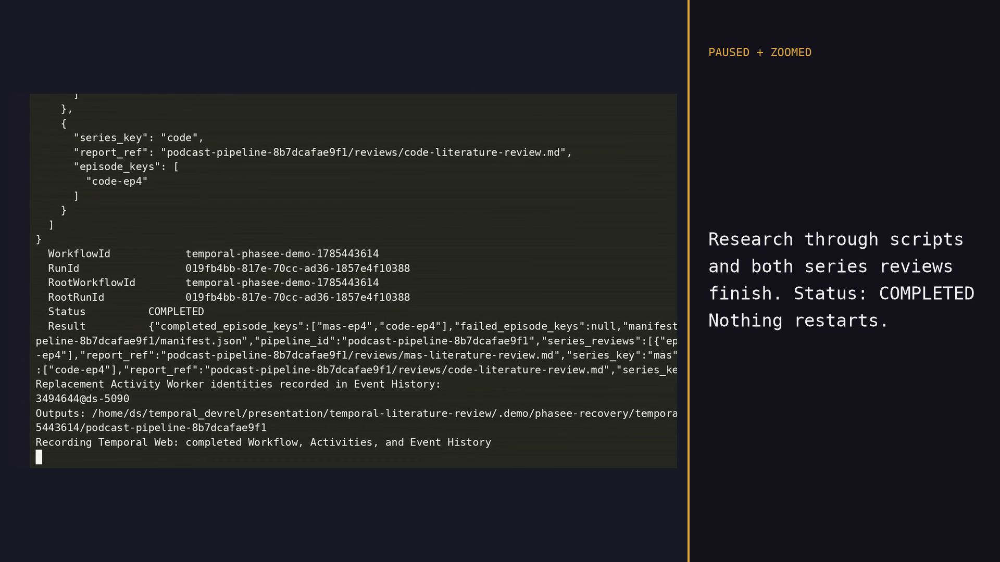

Temporal brings a research pipeline back to life
Improving the durability of our research pipeline using Temporal's Python SDK
SIGKILLduring two heartbeat-emitting Activities
Improving the durability of our research pipeline using Temporal's Python SDK
SIGKILLduring two heartbeat-emitting Activities
Each episode moved through research → deep dive → podcast script. Two literature reviews waited for all five episodes in their series. The JavaScript client held the active phase and in-flight promises in memory.
phase('Research')
await pipeline(
EPS,
(it) => agent(researchPrompt(it)),
(research, it) => agent(deepDivePrompt(it, research)),
(deepDive, it) => agent(scriptPrompt(it, deepDive)),
)
phase('Synthesis')
await parallel(literatureReviews)researched = await workflow.execute_activity(
"research_episode", request, ...)
deep_dive = await workflow.execute_activity(
"write_deep_dive", DeepDiveRequest(...), ...)
script = await workflow.execute_activity(
"write_podcast_script", ScriptRequest(...), ...)
series_reviews = await asyncio.gather(
*(self._write_series_review(...) for series in pipeline.series)
)The response journal suppresses a repeated read once the response is stored. Paid or mutating providers must honor the same idempotency key to close the provider-success-before-journal-write gap.
SIGKILL lands while two Activities are in flight.
A replacement Worker receives attempt 2. Research, deep dives, scripts,
reviews, and the manifest finish under the same Workflow Execution.


Typed dataclasses, deterministic Workflow imports, Activity registration tests, Worker-kill evidence, strict MyPy, Ruff, and branch-aware test coverage above 80 percent.
Provider-enforced idempotency, shared artifact storage, task-queue capacity, Activity-specific retry policy, metrics, Worker Versioning, and Continue-As-New or Child Workflows as the catalog grows.